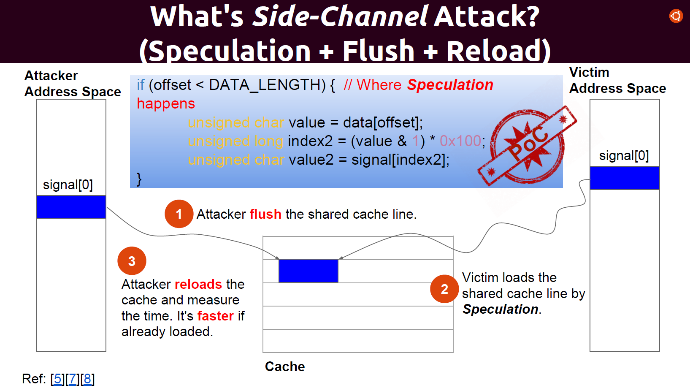
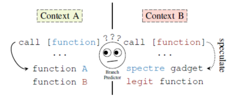
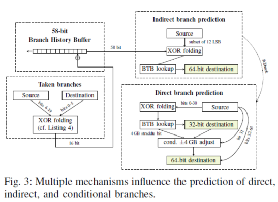
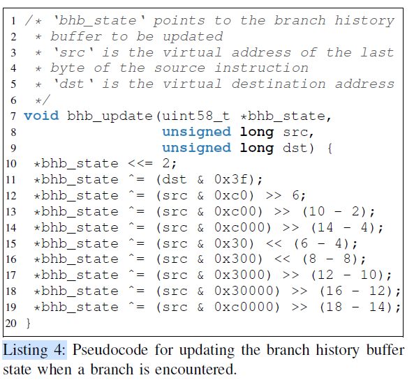
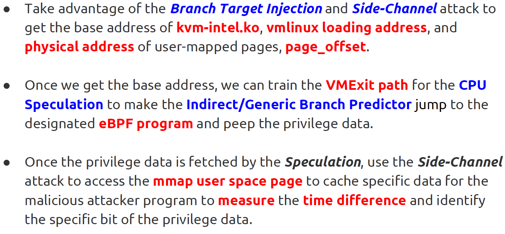

摘要
这篇文章描述的是大名鼎鼎的幽灵攻击，一种利用分支预测机制的侧信道攻击方法，可以从受害进程中读取任意内存。
分支预测(投机执行)在预测错误情况下执行了不该执行的逻辑，访问了不该访问的内存和寄存器。尽管CPU进行了状态回退，仍存在副作用，可能从侧信道泄露机密信息。
实际上，分支预测的实现与很多现有安全机制依赖的安全假设相悖，如操作系统线程分离、容器化、即时编译和缓存定时、侧信道攻击的防御机制。对现有的数十亿Intel、AMD、ARM设备带来了严重威胁。
这篇文章主要介绍的是幽灵攻击最主要的两个变体:
- 变体1 CVE-2017-5753: Bound Check Bypass
- 变体2 CVE-2017-5715: Branch Target Injection
研究背景
幽灵攻击主要利用分支预测技术和缓存侧信道攻击方法在受害进程中读取任意内存。本节对这篇文章主要利用的分支预测技术和主要利用的缓存侧信道攻击技术进行介绍。
分支预测
遇到条件分支语句时，CPU会对分支方向进行猜测，不会暂停等待分支结果被计算出来。当猜测正确时，CPU会提交预测执行的结果，并继续执行下去，可以节省大量的时间，当猜测错误时，CPU会回退到预测执行之前的状态，从正确的分支方向开始执行。一般而言，CPU可以提前预测运行数百条指令，该限制由CPU中reorder
buffer决定。在微体系结构中，指令被划分为micro-ops，在Haswell微体系结构中，reorder
buffer可以容纳192个micro-ops。
Intel会对如下指令进行预测:
直接调用和跳转。
间接调用和跳转。
条件分支。
分支预测方法一共分为三种:
静态预测:总是预测分支会/不会发生跳转。
单调预测:总是预测分支向地址更高/低的方向继续执行。
动态预测:根据近期程序行为进行预测。
主要分支预测组件为:
- Branch Target Buffer(BTB):存放每个分支指令的跳转目标地址低位，一般用分支指令地址的低位进行索引。
- Branch History Buffer(BHB):存放近期分支历史。
在动态分支预测时，分支预测器会利用BTB和BHB、结合分支预测算法，对分支方向进行预测，并从BTB中获取分支地址。BTB和BHB是一个核内所有线程共享的。
缓存侧信道攻击
本文利用的缓存侧信道攻击方法主要为flush+reload方法和evict+reload方法，这两个方法首先清空攻击者和受害者共享的一大块缓存区域，等待受害者执行一段时间后，通过衡量读取该区域内每个缓存行需要的时间来确定攻击者在这段时间内访问了哪些缓存行，若被访问缓存行对应的地址中含有机密信息，攻击者就可以通过这个方法恢复出机密信息。
flush+reload方法和evict+reload方法的区别在于前者通过clflush指令清空缓存区域，后者通过竞争的方式清空缓存区域。
本文方法
本文章将误导分支预测器进行错误预测，导致恶意代码被预测执行(在变体2中通过注入BTB来控制控制流到恶意代码)，哪怕CPU发现预测错误然后恢复状态以后，数据也从缓存侧信道泄露，然后本文利用缓存侧信道攻击方法从缓存中恢复泄露的数据，从而达到读取任意数据的目的。
相关工作
meltdown攻击和spectre attack一样，也是一种微体系结构层面的侧信道攻击，都利用了CPU投机执行的机制，它们的不同之处在于:
meltdown利用乱序执行时，CPU忽略了权限检查，可以读取内核地址。打破的是内核和用户之间的隔离。
spectre利用了分支预测，可以读取其他进程的地址空间。打破的是进程间的隔离。
meltdown 主要作用于intel
CPU。现代CPU普遍采用分支预测技术，所以spectre作用范围更广。
研究内容
这篇文章主要研究内容是幽灵攻击，介绍了最主要的两个变体:
变体1 CVE-2017-5753: Bound Check Bypass
变体2 CVE-2017-5715: Branch Target Injection
变体1通过误导分支预测器，绕过边界检查，导致CPU执行不该执行的分支，读取不该读取的数据，CPU状态恢复之后，攻击者从缓存中恢复该读取的数据，从达到读取任意地址的目的。变体2通过注入BTB和误导分支预测器，劫持控制流到gadget，导致gadget被瞬态执行，读取攻击者想要读取的数据，然后从缓存中恢复该数据，从而读取任意地址。
方法实现
攻击总览
整个攻击主要思路为:
诱使受害者进行推测执行。
利用缓存信道泄露受害者机密信息。
整个攻击可分为三个阶段。
阶段一
setup阶段，主要工作为:
训练处理器，使其进行可利用的错误的分支预测。
进行一些操作，使得推测执行更容易发生，如控制cache，清除处理器确定实际控制流所需要的数据。
准备秘密信道: 进行Flush+Reload或Evict+Rload的清空缓存部分。
阶段二
让处理器推测执行指令，使受害者的机密信息从其上下文中被存放到机密信道。可能进行的工作为:
攻击者请求受害者执行某种操作，从而触发推测执行，如系统调用、socket、文件等。
或在自己的代码中推测执行，以获取同一进程中的敏感信息。如在解释器、JIT编译器、安全语言的沙箱中获取敏感信息。
推测执行把敏感数据暴露在了机密信道，如cache中。所以推测执行中可以读取一个攻击者给定的地址的值，然后把这个值作为地址的一部分，对该地址进行内存操作，改变其对应cache状态，从而暴露这个值。
阶段三
通过Flush+Reload或Evict+Rload恢复秘密值。
变体1
变体1假定攻击者想要读取同一线程中原本无法读取的区域。变体1POC如图所示，变体1通过训练分支预测器，即多次使用合法的offset运行该代码片段，导致if分支被误导，使得在后续攻击者使用不合法的offset调用该代码片段时，后续代码被预测执行，将signa**l + index2地址的值读取到cache中，哪怕该代码片段最后会被回退，signal+ index2地址对应的缓存行仍然会保存在cache中，攻击者可以通过flush+reload方法获取index2的值，从而得到value的值(一个攻击者无法访问的机密值)。
变体1的应用场景为javascript等沙箱和即时编译器、解释器场景中，变体1可以应用在eBPF接口中读取内核地址。
变体2
在变体2中，假定攻击者和受害者是统一进程的两个线程，攻击者想要读取受害者的内存，如图 。攻击者可以找到受害者地址空间中的一个gadget(通常在共享库中)和选取受害者的一个间接分支指令为注入目标。在自身地址空间的相同位置的间接分支指令处不断跳转到gadget在受害者地址空间中的地址，从而导致受害者的目标间接分支指令对应BTB表项被注入为gadget地址，受害者执行该间接分支指令时，会发生预测执行gadget，攻击者可以利用该gadget完成一些读取操作，配合后续的flush+reload。
gadget
gadget需要选取攻击者能够控制其中两个寄存器的(部分情况下一个寄存器也够用)代码片段，如下:
add/xor/... R2,[R1]
access R2
然后就可以通过flush+reload方法恢复出[R1]的值。
变体2相比变体1更灵活。作者还提出了通过变体2在虚拟机中读取host主机地址空间的方法。
攻击KVM
逆向分析Intel
Haswell分支预测器内部，以准备对KVM进行攻击。作者使用同一核上的两个超线程进行实验，完成逆向:
Hyperthread A: jump指令跳转到Address 1。
Hyperthread B: jump指令跳转到Address 2。
A中Address 2处放着load一个缓存行的代码。
用flush&reload方法统计那个缓存行被加载的频率，计算错误预测率，从而探索分支预测算法。
逆向结果:
2 

攻击KVM的方法:假设攻击者有guest VM的完全控制权限，包括ring0，想要读取host内存地址。
通过分析BTB和BHB泄露的信息来获取：
hypervisor ASLR后的地址：Jump over ASLR: Attacking branch
predictors to bypass ASLR找到L3 cache集关联信息：Last-Level Cache Side-Channel Attacks
are Practical物理内存位置映射信息: 通过分支注入spctre gadget来获取。
通过在hypervisor内存执行eBPF解释器来作为gadget，使用针对间接分支主要预测机制为目标的间接分支注入的方法，来泄露hypervisor的内存。
这一部分我没有看懂，在网上找到了稍微易懂一点的下图:
图片来源于youtube
防御措施
防御措施可以分为五个方向去做:
防止推测执行。
未来可以允许软件禁用推测执行，或者硬件可以切换到禁止推测执行模式。但不能在当前立即解决问题。
修改软件来串行执行或使用禁止推测指令来保证后续指令不会被推测执行。在分支指令的两个分支方向都放置ifence指令。
在间接分支之前插入Ifence，可以确保清空分支之前的流水线，保证该分支被快速解决，从而减少推测执行的指令数量。
防止敏感数据泄露:
进程间隔离、数组边界检查、指针毒化。对JIT编译器、解释器最有用。防止数据进入机密信道:
未来处理器可以检测推测执行是否获取了数据，并阻止该数据被用于之后的操作。防止从机密信道提取数据:
如javascript降低了计时器的精度，还有概率添加抖动。只能降低攻击性能，不能杜绝攻击。当前处理器没办法完全消除隐蔽信道。防止间接分支毒化-Intel和AMD指令集架构的控制间接分支的机制:
Indirect Branch Restricted Speculation (IBRS):
间接分支限制推测，防止特权级高的间接分支被特权级低的间接分支影响。IBRS模式中的处理器不受IBRS模式外的计算影响。Single Thread Indirect Branch Prediction (STIBP):
限制在同一内核的超线程上执行的软件之间的分支预测共享。Indirect Branch Predictor Barrier (IBPB):
防止在设置屏障之前运行的软件影响在屏障之后运行的软件的分支预测（通过刷新BTB状态）。
防止间接分支毒化-google的retpolines:用ret指令替换所有的间接分支，相当于禁用分支预测。
- Intel为一些处理器发布了micro-code更新，禁用return指令fall-back到BTB进行预测的机制。
要解决这个问题需要从根本上改变指令集体系结构，需要在安全性和性能之间做权衡取舍。